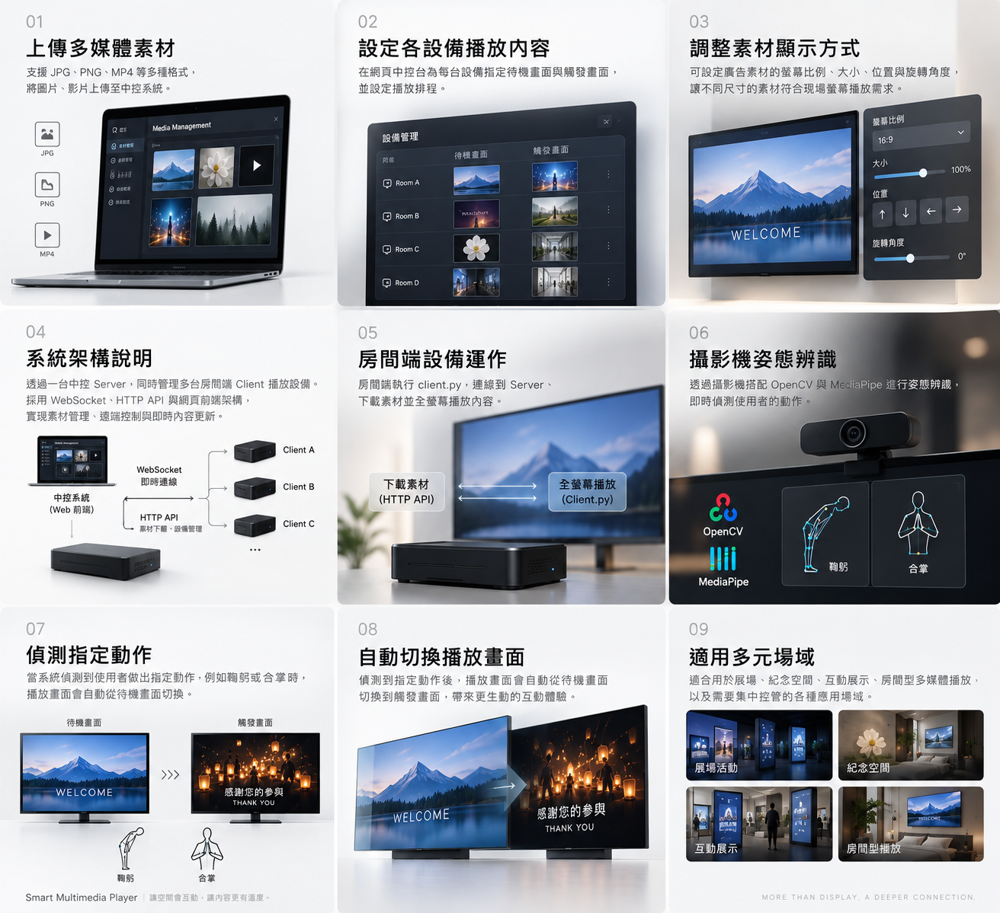
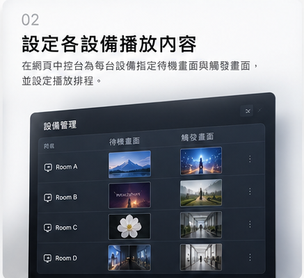
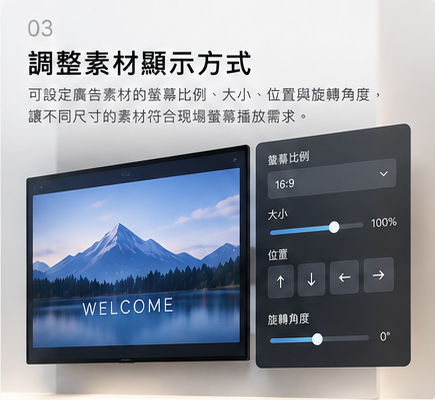
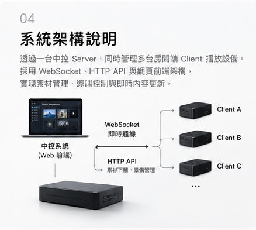
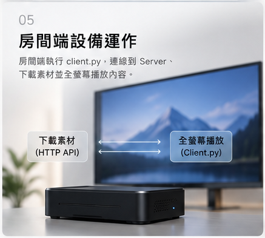
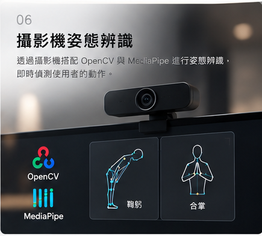
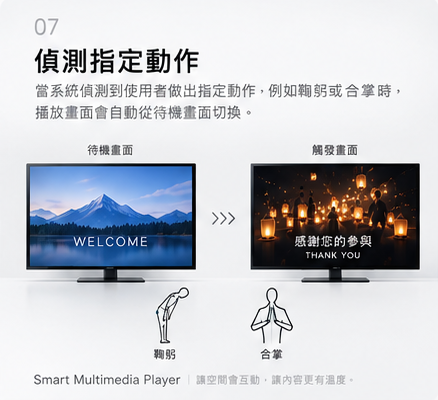
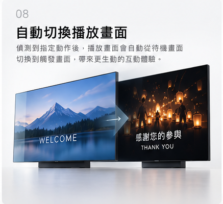
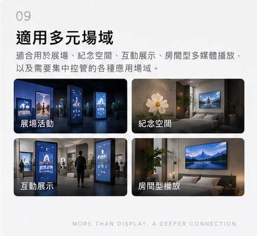

01 / MEDIA LIBRARY
上傳多媒體素材
支援 JPG、PNG、MP4 等常用格式，將圖片與影片集中上傳至中控系統，再派送到指定設備。

SCROLL管理者透過網頁中控台，將媒體素材配置到不同房間設備；房間端接收設定後全螢幕播放，並以攝影機即時辨識使用者動作。
當系統偵測到鞠躬或合掌等指定姿態，播放畫面會自動從待機內容切換至觸發內容，創造自然、無接觸的互動體驗。
ONE SYSTEM, NINE CAPABILITIES
每項功能都使用九格圖中對應的獨立畫面輔助說明。從管理端到播放端，每一步都在同一套系統內完成。
支援 JPG、PNG、MP4 等常用格式，將圖片與影片集中上傳至中控系統，再派送到指定設備。

在中控台查看房間端連線狀態，分別指定待機畫面、觸發畫面，以及各設備需要播放的內容。

依螢幕比例調整素材大小、位置與旋轉角度，讓不同尺寸的內容符合現場滿版播放需求。

Server 統一管理素材與排程，透過 WebSocket 和 HTTP API 與多台房間端 Client 即時溝通。

Client 連線至 Server 後下載指定素材、寫入本機快取並進行全螢幕播放，同時持續回報設備狀態。

運用 OpenCV 與 MediaPipe 分析攝影機畫面中的人體節點，即時判斷使用者姿態。

當使用者完成鞠躬、合掌等指定動作，系統便確認互動事件並送出播放觸發。

辨識條件成立後，播放器從待機畫面自動切換至觸發內容，完成後再回到原始播放狀態。

適用於展場、紀念空間、互動展示與房間型多媒體播放，也能依現場需求持續擴充。
SYSTEM ARCHITECTURE
Server 負責素材管理、設備設定與即時指令；各房間 Client 負責下載內容、全螢幕播放與攝影機辨識。WebSocket 維持即時連線，HTTP API 傳遞素材與設定。
BUILT FOR REAL SPACES
適合需要集中控管、跨設備播放，或透過動作建立互動的實體空間。
依展區設備派送內容，讓觀眾動作成為展示的一部分。
以鞠躬、合掌等動作，觸發莊重且自然的影像回應。
透過攝影機辨識，打造不需接觸螢幕的互動流程。
為不同空間配置專屬待機與觸發內容，統一遠端管理。
SMART MULTIMEDIA PLAYER